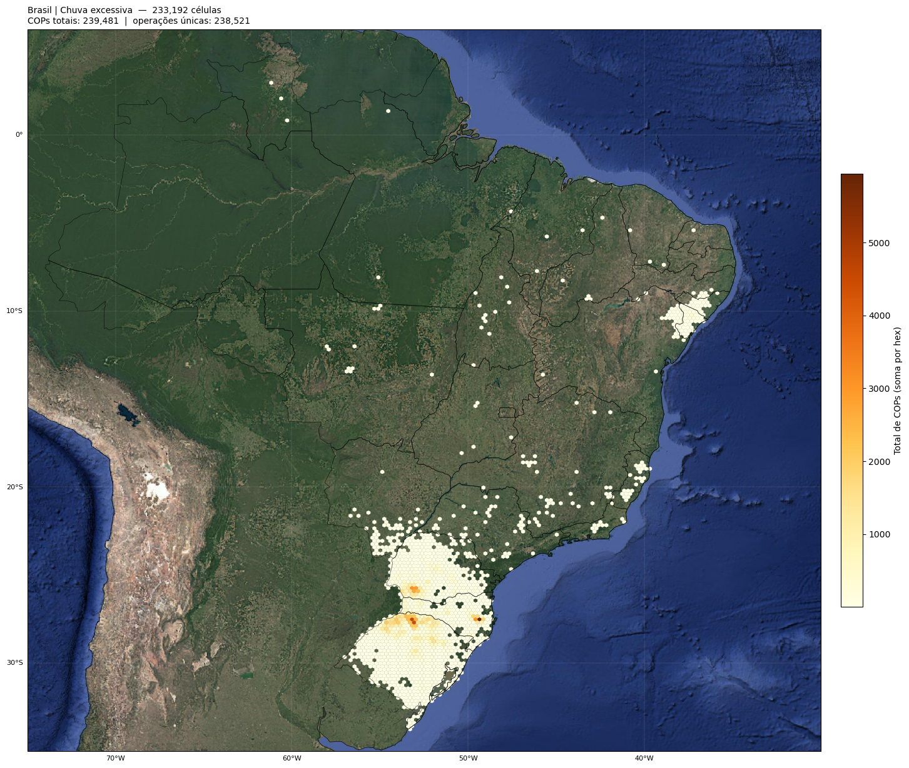
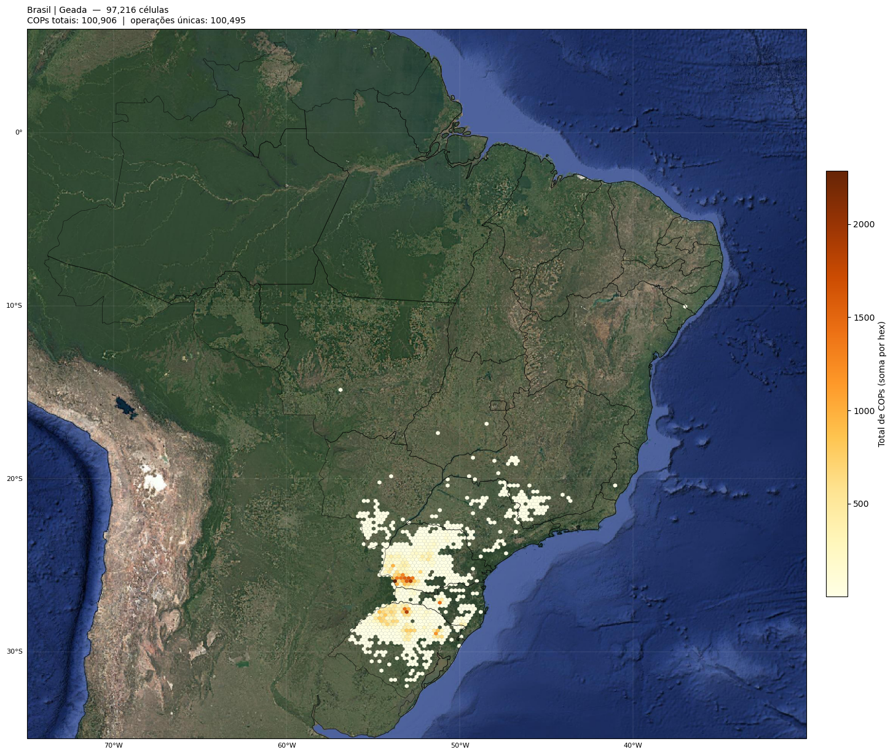
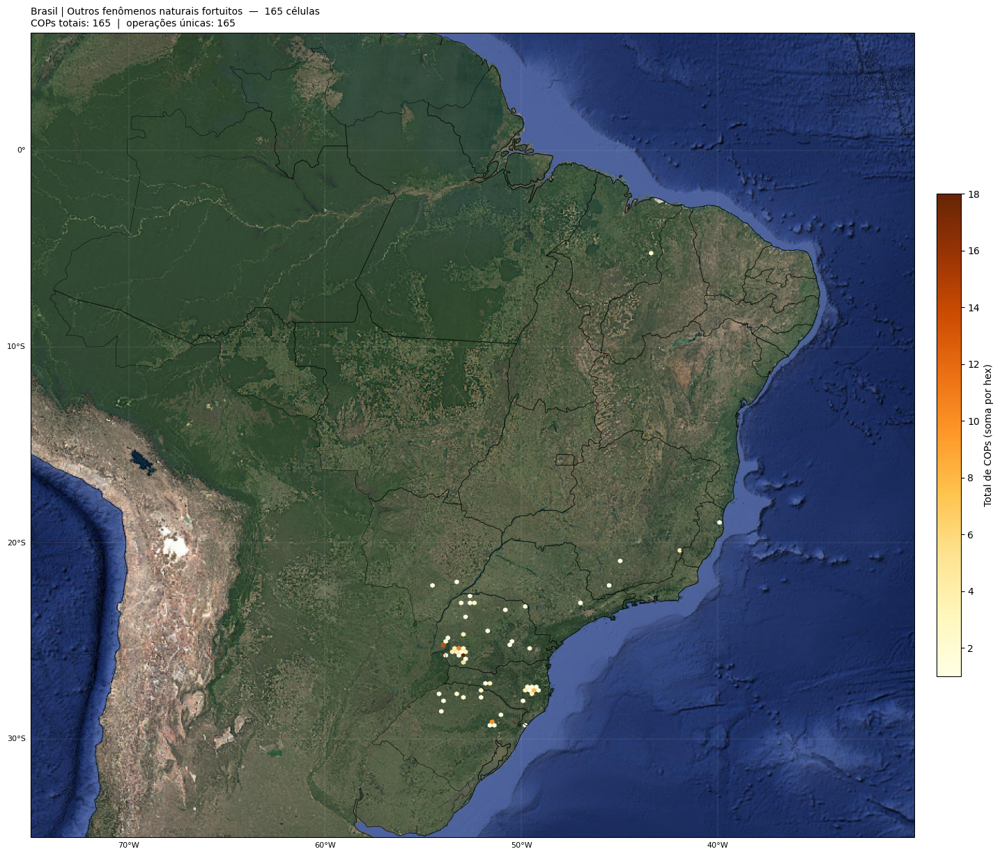
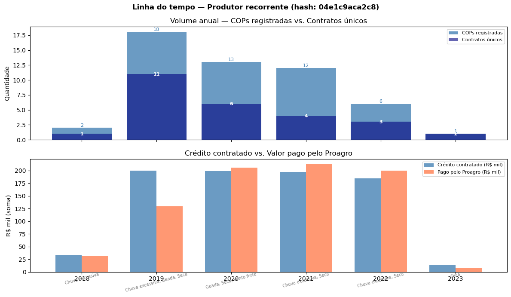
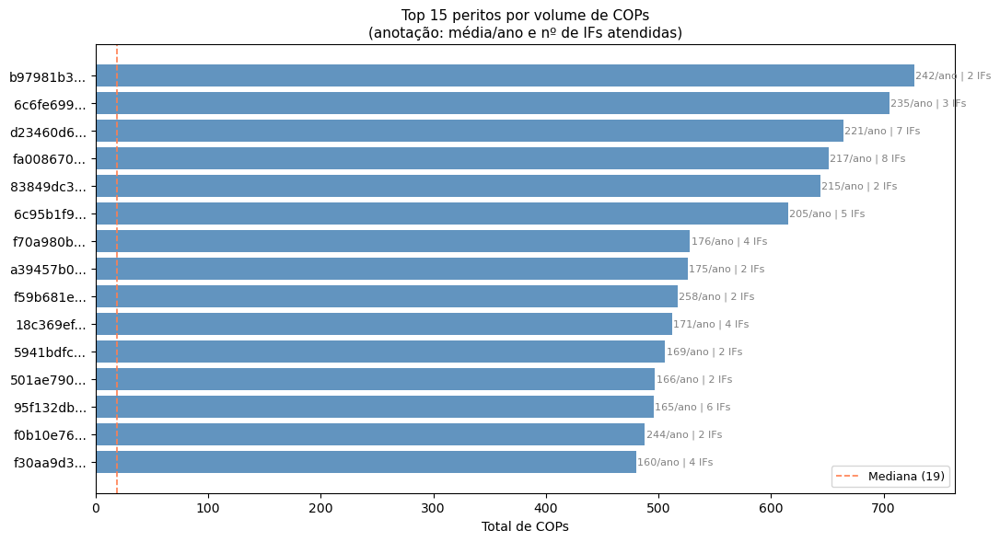
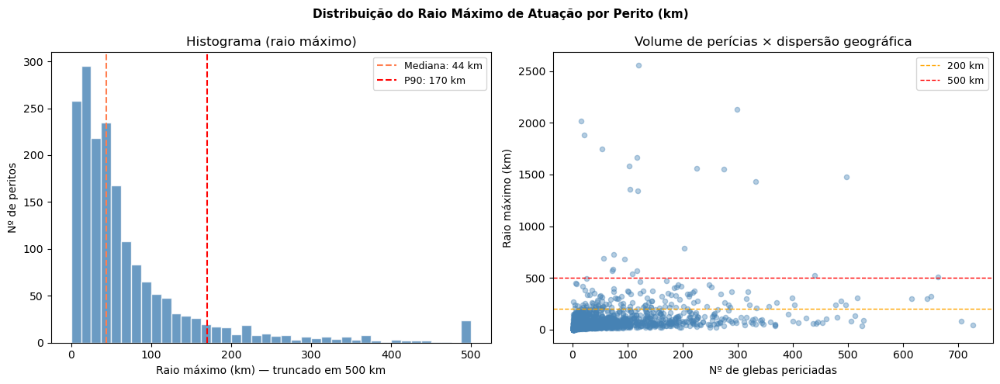
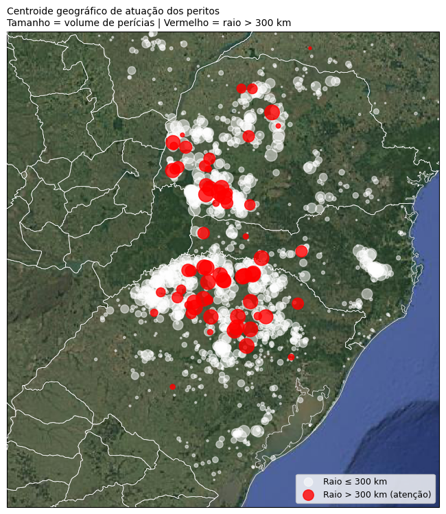
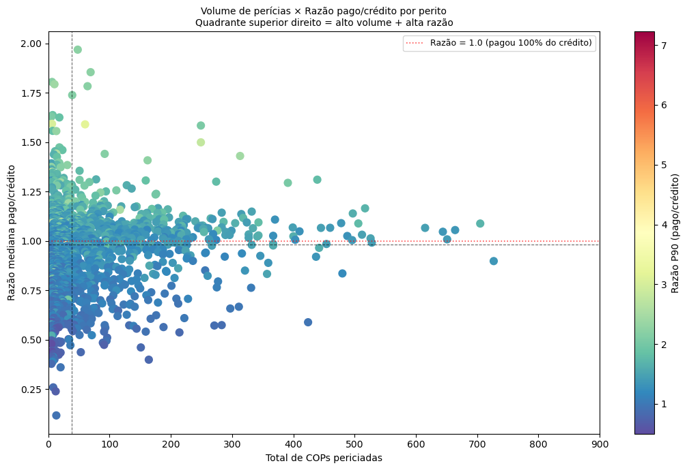
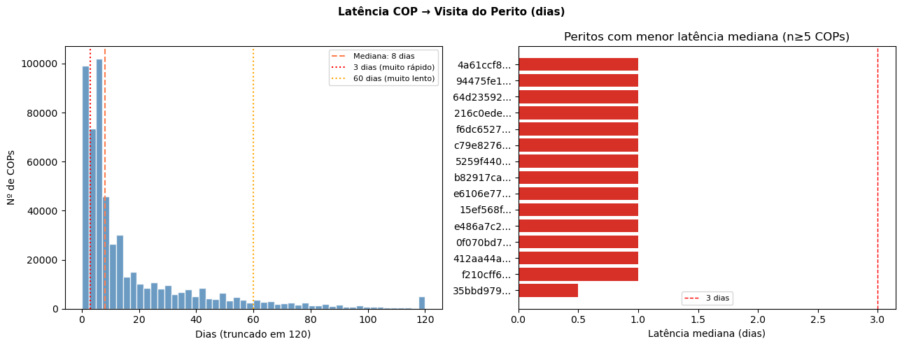
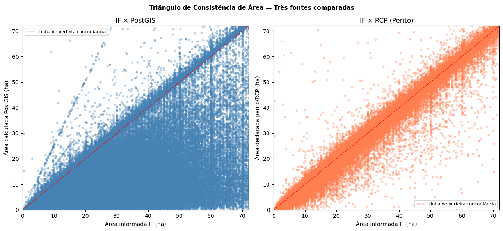

Aula 5 — análise integrada de COPs: recorrência, concentração e valores
Esta é a aula menos meteorológica do módulo. Mudamos o foco para a leitura crítica dos dados administrativos do Sicor — quem pericia muito, quem paga mais, quem se repete ano a ano. Os indicadores aqui são os que TCU e BCB costumam usar em auditorias.
Bloco 1 — preparação e mapa nacional por evento
Mesmas três correções padrão: longitude invertida, recorte ao bounding box do Brasil, e truncamento de hashes anonimizados para 12 caracteres:
df = pd.read_csv('sicor-interest.anom.csv', low_memory=False)
df['longitude_centroide'] = df['longitude_centroide'].abs() * -1
df = df.loc[df['latitude_centroide' ].between(-34, 6)].copy()
df = df.loc[df['longitude_centroide'].between(-75, -33)].copy()
for col in ['cd_cpf_produtor_hash', 'cd_cpf_perito_hash',
'cd_cpf_cnpj_periciadora_hash', 'cnpj_if_hash', 'cd_dap_hash']:
if col in df.columns:
df[col] = df[col].astype(str).str[:12]
Mapa de densidade nacional por evento (hexbin):

Figura 95 - Densidade nacional de COPs — Chuva excessiva.

Figura 96 - Densidade nacional de COPs — Seca.

Figura 97 - Densidade nacional de COPs — Geada.
Deduplicação por (ref_bacen, nu_ordem)
Para análises de recorrência por produtor/perito/IF precisamos de uma linha por COP única:
gdf_sicor_unique = gdf_sicor.drop_duplicates(
subset=['ref_bacen', 'nu_ordem'], keep='first',
).copy()
Regra de uso de dois DataFrames
Contagem de COPs →
df_azarado(bruto, com glebas);Contratos únicos →
ref_bacen.nunique();Valores financeiros →
df_az_unique(deduplicado).
Somar valores do bruto superestimaria o crédito em ~Nx (N = glebas por contrato).
Bloco 2 — caso de estudo: produtor com maior recorrência
Como warm-up didático, exploramos o produtor com mais acionamentos na base. Calculamos métricas no DataFrame deduplicado:
df_az_unique['latencia_visita_dias'] = (
pd.to_datetime(df_az_unique['dt_visita']) -
pd.to_datetime(df_az_unique['dt_comunicacao'])
).dt.days
df_az_unique['razao_pago_credito'] = (
df_az_unique['vl_pago_total'] /
df_az_unique['vl_parc_credito'].replace(0, np.nan)
).round(3)
df_az_unique['div_area_pct'] = (
(df_az_unique['vl_area_informada'] - df_az_unique['area_gleba_ha']).abs()
/ df_az_unique['vl_area_informada']
) * 100

Figura 98 - Linha do tempo do produtor — superior: volume anual (COPs vs contratos únicos); inferior: crédito contratado × valor pago (R$ mil).
Bloco 3 — concentração de peritos e IFs
Volume por perito
cops_por_perito = (
gdf_sicor_unique
.groupby('cd_cpf_perito_hash')
.agg(total_contratos=('ref_bacen', 'count'),
anos_ativos=('ano_emissao', 'nunique'),
valor_mediano=('vl_parc_credito', 'median'),
ifs_atendidas=('cnpj_if_hash', 'nunique'))
.reset_index()
)
cops_por_perito['contratos_por_ano'] = (
cops_por_perito['total_contratos'] / cops_por_perito['anos_ativos']
)

Figura 99 - Top 15 peritos por volume de contratos. Anotação à direita mostra contratos/ano. O TCU (Acórdão 2493/2024) identificou peritos com mais de 750 perícias/ano [5] — logisticamente inviável se cada perícia exige visita a campo.
Indicador IVIP (vínculos IF × perito)
O IVIP mede o quanto uma IF concentra suas COPs em poucos peritos:
vinculo_perito_if = (
gdf_sicor_unique
.groupby(['cnpj_if_hash', 'cd_cpf_perito_hash'])
.agg(total_contratos=('ref_bacen', 'count'),
valor_total=('vl_parc_credito', 'sum'))
.reset_index()
)
total_por_if = vinculo_perito_if.groupby('cnpj_if_hash')['total_contratos'].sum()
vinculo_perito_if['pct_da_if'] = (
vinculo_perito_if['total_contratos'] /
vinculo_perito_if['cnpj_if_hash'].map(total_por_if) * 100
)
Tríades produtor × perito × IF
triade = (
gdf_sicor_unique
.groupby(['cd_cpf_produtor_hash', 'cd_cpf_perito_hash', 'cnpj_if_hash'])
.agg(total_contratos=('ref_bacen', 'count'),
anos=('ano_emissao', lambda x: sorted(x.unique())),
valor_total=('vl_parc_credito', 'sum'))
.reset_index()
.sort_values('total_contratos', ascending=False)
)
triades_relevantes = triade[triade['total_contratos'] >= 3]
Um caso com 3 recorrências em 3 anos é comum (vínculo estável). Um caso com 10 recorrências em 2 anos é bem menos comum.
Bloco 4 — raio de atuação por perito
Um perito que vistoria glebas a centenas de quilômetros de distância na mesma semana não pode estar fazendo trabalho criterioso.
def raio_atuacao(grupo):
"""Raio médio e máximo (km) por perito — aproximação 1° ≈ 111 km."""
coords = grupo[['latitude_centroide', 'longitude_centroide']].values
if len(coords) < 2:
return pd.Series({'raio_med_km': 0, 'raio_max_km': 0,
'lat_centroide': coords[0, 0],
'lon_centroide': coords[0, 1]})
lat_c, lon_c = coords.mean(axis=0)
d = np.sqrt((coords[:, 0] - lat_c)**2 + (coords[:, 1] - lon_c)**2) * 111
return pd.Series({'raio_med_km': d.mean(),
'raio_max_km': d.max(),
'lat_centroide': lat_c,
'lon_centroide': lon_c})
raio_perito = gdf_coords.groupby('cd_cpf_perito_hash').apply(raio_atuacao)

Figura 100 - Histograma e scatter (volume × dispersão) do raio máximo por perito. A mediana costuma ficar abaixo de 100 km. Peritos com raio > 300 km são candidatos naturais à investigação.

Figura 101 - Cartopy com centroides geográficos dos peritos. Tamanho = volume. Vermelho = raio > 300 km.
Bloco 5 — razão pago / crédito contratado
Pergunta crítica: o Proagro paga mais ou menos que o solicitado?
Razão |
Interpretação |
|---|---|
< 1,0 |
Pagou menos que o solicitado — caso comum (cobertura parcial). |
= 1,0 |
Pagou exatamente o solicitado — perda total. |
> 1,0 |
Pagou mais que o solicitado — atípico, merece atenção. |
Cálculo correto:
gdf_sicor_unique['razao_pago_credito'] = (
gdf_sicor_unique['vl_pago_total'] /
gdf_sicor_unique['vl_parc_credito'].replace(0, np.nan)
).round(3)
Razão por perito (somente peritos com ≥ 5 COPs para relevância estatística):
razao_por_perito = (
gdf_sicor_unique
.dropna(subset=['razao_pago_credito', 'cd_cpf_perito_hash'])
.groupby('cd_cpf_perito_hash')
.agg(n_cops=('ref_bacen', 'count'),
razao_mediana=('razao_pago_credito', 'median'),
razao_p90=('razao_pago_credito', lambda x: x.quantile(0.90)),
valor_pago_sum=('vl_pago_total', 'sum'))
.reset_index()
.query('n_cops >= 5')
.sort_values('razao_mediana', ascending=False)
)

Figura 102 - Scatter volume × razão por perito. O quadrante superior direito (alta razão E alto volume) é o mais relevante analiticamente.

Figura 103 - Boxplot da razão por tipo de evento. Permite ver se há diferenças sistemáticas — perda total tende a ocorrer mais em alguns eventos (geada, granizo).

Figura 104 - Mapa de COPs onde o pagamento foi maior que o solicitado. Esses casos justificam revisão caso a caso.
Síntese final
Esta aula consolidou cinco perspectivas administrativas que complementam as análises meteorológicas das aulas 1-3:
Densidade espacial por evento → onde estão os hotspots nacionais (cont. da Aula 4);
Recorrência por produtor → quem aciona muito, quão diverso é o portfólio;
Concentração de peritos e IFs → IVIP, top peritos por volume, tríades recorrentes;
Raio de atuação → indicador físico difícil de manipular;
Razão pago / crédito → comportamento financeiro relativo.
Aviso
Nenhum indicador isolado acusa irregularidade. A função do conjunto é filtrar onde investigar — TCU/BCB usam combinação de indicadores convergentes para priorizar auditoria [5].
Próximos passos
Tipologias de inconsistências meteorológicas em sinistros — categorização teórica das inconsistências.
Aplicações práticas da análise e interpolação espacial — síntese aplicada com pipeline completo.